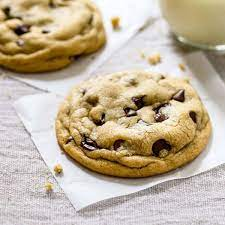
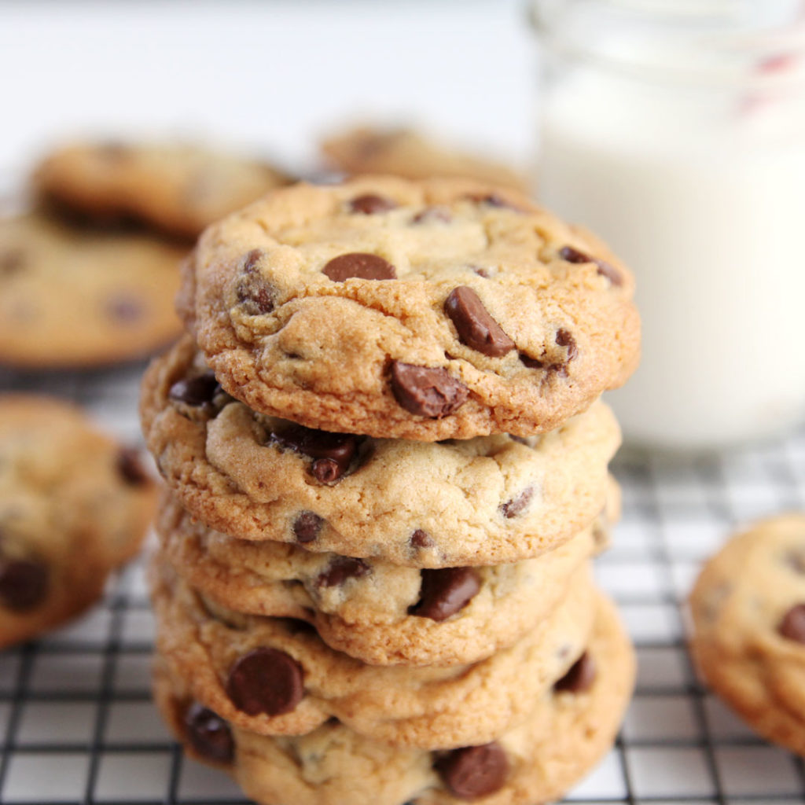

Chocolate Chip Cookies
History
The original recipe was created in the late 1930s by Ruth Wakefield who famously ran the Toll House restaurant in Whitman, Massachusetts. The recipe was made on accident, when Wakefield was trying to make a variation of a butterscotch dessert. She let the chocolate chips fall where they may, and the chocolate chip cookie was born. The delicious mix of crispy cookie and melted chocolate chunks first appeared in her 1938 cookbook “Tried and True” and was intended to accompany ice cream. The main ingredients are flour, sugar, brown sugar, butter or margarine, chocolate chips, eggs, vanilla, baking soda, & salt, but people have created new recipes over time.
This recipe is easy, and makes chocolatey, chewy, delicious chocolate chip cookies.
Ingredients
- 1 cup of slated butter, softened
- 1 cup of white, granulated sugar
- 1 cup of light brown sugar, packed
- 2 tsp pure vanilla extract
- 2 large eggs
- 3 cups of all-purpose flour
- 1 tsp baking soda
- 1/2 tsp baking powder
- 1 tsp sea salt
- 2 cups of chocolate chips
Directions
- Preheat oven to 375 degrees F. Line a baking pan with parchment paper and set aside.
- In a separate bowl mix flour, baking soda, salt, baking powder. Set aside.
- Cream together butter and sugars until combined.
- Beat in eggs and vanilla until fluffy.
- Mix in the dry ingredients until combined.
- Add 12 oz package of chocolate chips and mix well.
- Roll 2-3 TBS of dough at a time into balls and place them evenly spaced on your prepared cookie sheets.
- Bake in preheated oven for approximately 8-10 minutes. Take them out when they are just BARLEY starting to turn brown.
- Let them sit on the baking pan for 2 minutes before removing to cooling rack.


Cited scources
History
Recipe
Chocolate chip cookie photo
Stack of cookies photo
Cookie video
{kind=link}
{kind=link}